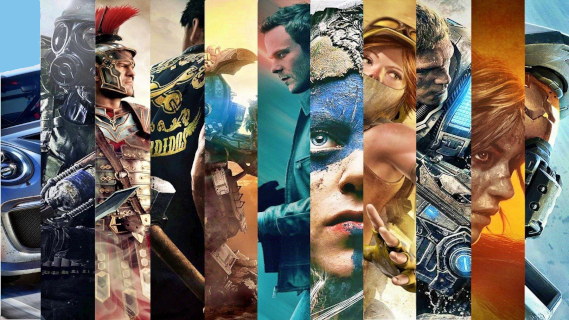

Люди средних лет хорошо помнят, как в детстве ждали зарплаты родителей, чтобы купить новый картридж для игровой приставки. Дешевые картриджи из Китая считались существенной статьей расходов. А многие и о самой приставке не могли и мечтать. Сегодня же всё иначе — в Интернете давно уже появились бесплатные игры, которые стали нормой. И это не просто тренд, а настоящая революция! Миллионы людей по всему миру запускают хиты вроде Fortnite или Genshin Impact, не потратив ни копейки. Как так вышло?

Считается, что всё началось с браузерных флеш-игр в нулевых, когда разработчики поняли: лучше дать доступ всем, а монетизировать через рекламу или внутриигровые покупки. И эта идея сработала. Она дала возможность студиям-разработчикам обеспечить себя доходами, позволяющими поддерживать и развивать проекты, а игрокам дала возможность бесплатно играть. Конечно, такая экономическая система имеет свои особенности, и о них будет сказано далее.
Сейчас существует множество типов игр. Есть Battle royale, где толпы игроков сражаются до последнего — Apex Legends тому пример, с динамичными матчами и кучей тактики. Имеются мобильные новинки вроде PUBG Mobile, которые затягивают на часы в метро или на перерыве. Стоит вспомнить про MMORPG: World of Tanks или Warframe предлагают огромные миры, где прокачка персонажа — это искусство.
Есть игры которые надо устанавливать, а есть игры, запускаемые прямо в браузере. Браузерные варианты использовать проще: зашёл на портал, выбрал шутер или головоломку — и вперёд, играй без скачивания.
Все это разнообразие показывает, что интересы игроков весьма широкие, игроков достаточно много, чтобы существовало множество ниш. К примеру, можно рассмотреть одну из них - простые браузерные и мобильные игры, в которые играют почти все. Что делает такие игры популярными? Во-первых, доступность. Не нужно мощный ПК или консоль — хватит смартфона или старого ноута. Во-вторых, часто в таких играх присутствует социалка: играй с друзьями онлайн, общайся в чате, создавай кланы. Статистика по пользователям показывает, что: в 2025 году аудитория простых free-to-play игр превысила 3 миллиарда пользователей.
Конечно, есть нюансы. Микротранзакции в игре могут раздражать, если кто-то тратит реальные деньги на скины или бустеры, но многие обходятся без них годами. Так же, игроку важно выбирать проверенные платформы, чтобы вместе с играми в компьютер или телефон не напихали вирусов и программ удаленного доступа для мошенников. Да и проблему модерации никто не отменял: платформы должны обеспечивать качество выставляемых игр, выполнять проверку на наличие запрещенного контента, вовремя вмешиваться в излишне эмоциональные разговоры игроков друг с другом.
В России бесплатные игры особенно расцвели после 2020-х: локальные студии вроде Gaijin Entertainment делают хиты на русским языке, а Steam и Epic Games Store предлагают тысячи бесплатных игр во всех возможных жанрах с русской локализацией. Бесплатная игра не означает, что она низкобюджетная с посредственным наполнением: часто в бесплатных проектах реалистичная графика на Unreal Engine 5, мощные ИИ-соперники и в наличии режимы для VR-очков. Разработчики стремятся к кроссплатформенности — играй на ПК, переключайся на телефон без потери прогресса. Конкуренция между разработчиками высокая: в море однотипных условно-бесплатных проектов (особенно в мобильном сегменте) пробиться к топу становится всё сложнее. Легко выживают только проекты-гиганты с бюджетами под стать блокбастерам, либо действительно уникальные инди-игры, предлагающие интересные новые сюжеты.
Что в итоге?
Бесплатные игры — это не просто способ игрокам сэкономить. Это новая философия, где деньги платят не за «вход», а за эмоции, время и уникальный опыт. Это демократизация гейминга: любой человек с доступом в интернет, без дополнительных денежных трат, может почувствовать себя героем эпических баталий, исследователем, тренером или талантливым архитектором. И пусть скептики ворчат про «платные донаты», миллиарды игроков по всему миру уже сделали свой выбор: если человек хочет играть, он будет играть, и ничто этому помешать не может. Мир гейминга не замкнулся на дорогих приставочных блокбастерах. В нем есть место для всех.